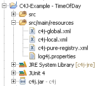

Configuration
The behaviour of C4J like aktivating or deactivating contracts or how to react to a contract violation can be controled by its configuration.
The C4J configuration is done be means of four configuration files in the source folder src/main/resources:

Logging can be done on different levels:
- c4j-global.xml allows you to tell C4J how to react to a contract violation. The default conctract violation action is to throw an assertion error. Furthermore C4J can be instructed to write the instrumented class files into a distinct directory. The default value for writing transformed classes is false.
- c4j-local.xml allows you to activate or deactivate contracts. Furthermore the automated pure validation can be activated or deactivated for pure methods. As only pure methods are allowed to be used in contracts, a list of pure methods of libraries which do not use C4J can be imported by the usage of the pure-registry-import attribute. For external contracts the contract-scan-package attribute tells C4J where to find external contracts and link them to their corresponding target classes. This method is usualy used for legacy systems.
- c4j-pure-registry.xml provides the list of pure methods in packages which do not use the C4J annotation @Pure but are frequently used in contracts, i.e. the equals method of class java.lang.Objet.
- log4j.properties control the log4j tool used by C4J. It allows us to tell C4J what to log where and how.
Logging can be done on different levels:
- ERROR: Contract violations, wrong usage of C4J.
- WARN: Reveals potential problems with C4J.
- INFO: Shows contract method calls and which classes are guarded by which contracts.
- DEBUG: Technical information about C4J.
- TRACE: Deep technical information about C4J.
The c4j-global.xml might look like this (complete listing):
<?xml version="1.0" encoding="UTF-8"?>
<c4j-global xmlns="http://c4j.vksi.de/c4j-global/">
<write-transformed-classes directory="c4j-classes">false</write-transformed-classes>
<contract-violation-action>
<default>
<log>false</log>
<throw-error>true</throw-error>
</default>
<package name="timeofday">
<log>false</log>
<throw-error>true</throw-error>
</package>
<class name="timeofday.TimeOfDay">
<log>false</log>
<throw-error>true</throw-error>
</class>
</contract-violation-action>
</c4j-global>
The c4j-local.xml might look like this (complete listing):
<?xml version="1.0" encoding="UTF-8"?>
<c4j-local xmlns="http://c4j.vksi.de/c4j-local/">
<configuration>
<root-package>timeofday</root-package>
<pure-validate>true</pure-validate>
<pure-registry-import>c4j-pure-registry.xml</pure-registry-import>
<contract-scan-package>timeofday</contract-scan-package></configuration>
</c4j-local>
The c4j-pure-registry.xml might look like this (complete listing):
<?xml version="1.0" encoding="UTF-8"?>
<c4j-pure-registry xmlns="http://c4j.vksi.de/c4j-pure-registry/">
<type name="java.lang.Boolean">
<pure-method signature="booleanValue()"/>
</type>
<type name="java.lang.Class">
<pure-method signature="getName()"/>
</type>
<type name="java.lang.Integer">
<pure-method signature="intValue()"/>
<pure-method signature="valueOf(int)"/>
</type>
<type name="java.lang.Object">
<pure-method signature="getClass()"/>
<pure-method signature="equals(java.lang.Object)"/>
<pure-method signature="hashCode()"/>
<pure-method signature="toString()"/>
</type>
<type name="java.lang.String">
<pure-method signature="valueOf(java.lang.Object)"/>
</type>
<type name="java.util.Collection">
<pure-method signature="size()"/>
<pure-method signature="isEmpty()"/>
</type>
<type name="java.util.List">
<pure-method signature="get(int)"/>
</type>
</c4j-pure-registry>
The log4j.properties might look like this (complete listing):
log4j.rootLogger=INFO, ConsoleAppender log4j.appender.ConsoleAppender=org.apache.log4j.ConsoleAppender log4j.appender.ConsoleAppender.layout=org.apache.log4j.PatternLayout log4j.appender.ConsoleAppender.layout.ConversionPattern=C4J %-5p - %m%n